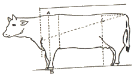
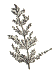
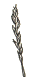
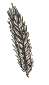
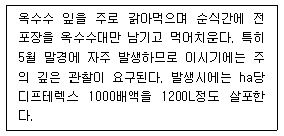

축산산업기사 (2007-05-13 기출문제)
1과목: 가축번식 육종학
1. 가축의 난자와 정자가 만나 수정이 이루어지는 부위는?
- 난관 누두부
- 난관 팽대부
- 자궁각
- 자궁체
(정답률: 95%)

2. 황체자극호르문(Prolactin)과 제일 관계 있는 것은?
- 혈관수축
- 산란 촉진
- 환우 촉진
- 취소성유발
(정답률: 53%)
3. 뇌하수체 전영ㅂ에서 분비되지 않는 호르몬은?
- 프로락틴 호르몬
- 옥시토신 호르몬
- 황체형성 호르몬
- 난포자극 호르몬
(정답률: 85%)
4. 계절적 영향이 적어 연중 번식이 가능한 가축은?
- 말
- 양
- 돼지
- 염소
(정답률: 98%)
5. 다음 중 순종교배에 속하지 않는 것은?
- 근친교배
- 동일 품종 내의 이계교배
- 무작위 교배
- 누진교배
(정답률: 53%)
6. 다음 중 젖소의 번식능률을 표기하는데 이용되지 않는 것은?
- 분만간격
- 수태당 소요되는 종부 횟수
- 종부 개시일부터 수태일가지의 소요 일수
- 발정 지속시간
(정답률: 61%)
7. 다음 중 돼지의 수정(종부) 적기는?
- 발정 개시 직후
- 수퇘지 허용 직후
- 수퇘지 허용 후 10~26시간
- 수퇘지 허용 후 3~4일
(정답률: 95%)
8. 젖소의 가장 이상적인 체형은?
- 삼각형
- 타원형
- 장방형
- 쐐기형
(정답률: 93%)
9. 다음 중 소의 배란 시기로 가장 적합한 것은?
- 발정 개시 후 6~9시간
- 발정 종료 후 10~13시간
- 발정 종료 전 25~36시간
- 교배 후 10~11시간
(정답률: 92%)
10. 근친교배가 유익하게 이용될 수 있는 경우로 적합하지 않은 것은?
- 유전자를 고정하고자 할 때
- 불량한 열성유전자를 제거하고자 할 때
- 혈연관계가 높은 자손을 생산하고자 할 때
- 이형 접합체를 증가시키고자 할 때
(정답률: 88%)
11. 다음은 Goodale-Hays의 산란 5요소설의 일부이다. 이것들 중 초년도의 산란수를 재배하는 요소가 아닌 것은?
- 조숙성
- 산란강도
- 동기 휴산성
- 사료 이용성
(정답률: 68%)
12. 수정란의 분화과정에서 신경계가 발생되는 부위는?
- 외배엽
- 중배엽
- 내배엽
- 투명대
(정답률: 73%)
13. 한우의 일당증체량을 개량하기 위한 수소와 암소의 선발차가 각각 0.2kg, 0.1kg이면 기대되는 세대당 유전적 개량량(kg)은?
- 0.06kg
- 0.15kg
- 0.38kg
- 0.45kg
(정답률: 48%)
14. 감염 소의 생식기로부터 누출되는 배설물에 오염된 사료나 물의 세균을 섭취함으로써 전염되는 가장 일반적인 소의 생식기병으로 유산을 일으키는 특징을 가지는 것은?
- 브루셀라병
- 비브리오병
- 렙토스피라
- 톡소플라즈마병
(정답률: 92%)
15. 다음 육우 중 Brangus 종의 육종에 사용된 기초 품종은?
- Brahman 종과 Shorthorn
- Angus 종과 Hereford
- Brahman 종과 Angus
- Hereford 종과 Santa Gertrudis
(정답률: 93%)
16. 한우 체위 측정시 아래 그림에서 A에서 B까지의 길이가 의미하는 것은?

- 체고
- 체장
- 십자부고
- 고장
(정답률: 86%)
17. 닭의 체중과 가장 밀접한 상관관계를 가지는 형질은?
- 정강이 길이
- 생존율
- 산란율
- 산료효율
(정답률: 85%)
18. 개체선발을 이용하여 가장 효과적으로 개량할 수 있는 돼지의 형질은?
- 사료효율
- 등 지방층 두께
- 이유 후 일당 증체량
- 복당 산자수
(정답률: 76%)
19. 분만과정은 준비기, 태아 만출기, 태반 만출기로 나뉘어진다. 준비기에 일어나는 특징적은 현상이 아닌 것은?
- 자궁 경관의 확장
- 자궁 근육의 수축
- 이유후 일당 증체량
- 옥시토신의 방출
(정답률: 48%)
20. 말이나 소에 많이 발생하는 난소질환의 하나로 무발정, 사모광증 등 불규칙한 발정이 일어나는 번식장해 현상은?
- 위임신
- 난소낭종
- 영구황체
- 프리마이틴
(정답률: 81%)
2과목: 가축사양학
21. 필수 아미노산으로만 구성된 것은?
- lysine - tyrosine - serine - glycine
- methionine - cystine - valine -serine
- histidine - valine - lysine - leucine
- threonine - valine - lysine - alanine
(정답률: 71%)
22. 산란계의 1일 단백질 요구량으로 가장 적합한 것은?
- 5
- 10g
- 16g
- 25g
(정답률: 84%)
23. 방목하는 젖소에서 가끔 발생되는 그라스 테타니는 어떤 물기물이 결핍되면 발생하는가?
- Mg
- Mn
- Cu
- Co
(정답률: 80%)
24. 고시폴이 함유되어 있어 많은 양을 사용할 수 없는 사료는?
- 임자박
- 면실박
- 채종박
- 아미인박
(정답률: 86%)
25. 가축의 생명유지에 필요한 에너지를 지배하는 요인이 아닌 것은?
- 가축의 운동
- 환경온도
- 가축의 수면
- 사료의 성분과 섭취
(정답률: 80%)
26. 근육의 발육은 세포의 수적, 양적으로 증가하는 것과 동시에 지방이 복강과 피하에 축적되는데 이때 근섬유 세포간에 지방이 축적되는 고기를 무엇이라고 하는가?
- 적육
- 지방육
- 상강육
- 염지육
(정답률: 95%)
27. 젖소의 초유에 대한 설명 중 옳지 않은 것은?
- 보통 우유에 비하여 진한 황색이다.
- 면역물질이 되는 글로불린 함량이 높다.
- 초유는 분만 직후 1회만 급여하면 된다.
- 비타민 함량이 높다.
(정답률: 80%)
28. 브로일러의 경우 사료 단백질 이용 효율로 가장 적합한 것은?
- 44%
- 54%
- 64%
- 74%
(정답률: 65%)
29. 도체평가 중에서 육질 등급과 관계가 없는 것은?
- 지방교잡(근내지방도)
- 지방색
- 맛
- 육색
(정답률: 95%)
30. 소에게 매일 13.25%의 단백질을 함유한 클로버 10kg을 공급하였다. 이 소는 매일 21.5kg의 분을 배석하였고, 분의 단백질 함량은 2.32%일 때 단백질의 소화율은?
- 약 42%
- 약 50%
- 약 62%
- 약 72%
(정답률: 64%)
31. 레그혼종 산란계의 육성기(0~6주령) 사료에 알맞은 조단백질 함량으로 가장 적합한 것은?
- 약 15%
- 약 18%
- 약 12%
- 약 25%
(정답률: 62%)
32. 비육우의 장기비육 기간을 3기로 구분할 때 소의 생리적인 면을 고려한 제 1기의 사양 관리로서 가장 적합한 것은?
- 단백질 함량이 높은 농후사료와 양질의 조사료를 많이 급여한다.
- 단백질 함량이 낮은 농후사료를 급여한다.
- 배합사료 중의 전분질 사료 비율을 높이고 조사료 급여량을 감소시킨다.
- 조사료를 많이 급여하여 농후사료의 섭취를 줄인다.
(정답률: 75%)
33. NRC는 육성비육하는 돼지의 비육전기(35~60kg) 사료 kg당 대사에너지를 명 kcal로 추천하고 있는가?
- 약 1200
- 약 2700
- 3200
- 4700
(정답률: 54%)
34. 일조시간이 길어지는 4월에 생산된 산란계 초생추를 개방식 계사에서 사육할 때 적당한 점등 방법은?
- 자연일조점등
- 일정시간 점등
- 점감점증점등
- 간헐점등
(정답률: 77%)
35. 난포자극호르몬과 난황호르몬 기능을 증진하고, 젖소의 유방염 예방으로 체세포 수를 감소시키는 광물질은?
- 아연(Zn)
- 몰리브덴(Mo)
- 마그네슘(Mg)
- 염소(Cl)
(정답률: 75%)
36. 반추가축 사료의 소화율 감소에 영향을 미치는 요인이 아닌 것은?
- 미생물 제제 첨가
- 배합사료 섭취량 증가
- 섬유소함량 증가
- 분쇄 곡류나 분말 조사료
(정답률: 65%)
37. 방목이용법에는 여러 종류가 있는데, 그 중 가장 집약적인 방목방법의 일종으로 목구를 전기목책으로 나누고 가축이 12시간 또는 이보다 짧은 시간 도안 한 목구에서 머물 수 있도록 초지를 할당하는 형태의 방목은?
- 고정방목
- 윤환방목
- 대상방목
- 계목
(정답률: 58%)
38. 다음 중 동물성 단백질사료가 아닌 것은?
- 어분
- 말분
- 혈분
- 우모분
(정답률: 71%)
39. 젖소의 비유곡선과 관련된 내용의 설명 중 틀린 것은?
- 비유 최성기에 도달하는 시기는 그 동물의 유전적 요소와 그 동물의 분만 전 영양상태 및 분만 후 사양관리에 따라 다르나 젖소의 경우는 평균 4~8주째 이다.
- 최고유량에 도달한 후 젖소의 산유량은 일정한 비율로 점차 감소하는데, 이 감소율은 개체와 비유기에 따라 다르지만 재 임신 후 22주경에 더욱 급속히 떨어진다.
- 비유초기에 충분한 영양소를 공급하지 못하더라도 비유중기 이후 충분한 영양소를 공급할 때는 보상성장의 효과로 인해 산유량이 거의 정상수준으로 회복된다.
- 재 임신시키지 않고 착유를 계속하면 유선의 활동이 약화되어 비록 유량은 감소하지만 2~3년 또는 그 이상까지도 젖을 분비할 수 있고, 6년 이상 비유를 계속한 기록도 있다.
(정답률: 72%)
40. 일반적으로 가공형태별로 보면 청초의 섭취량이 많고 건초의 섭취량은 적은데, 다음 중 번식우에 대한 조사료의 섭취 가능량(체중비)이 틀린 것은?
- 짚류 : 3~4%
- 사일리지 : 5~6%
- 근채류 : 6~8%
- 청예작물 : 8~10%
(정답률: 62%)
3과목: 축산경영학
41. 유사비가 30%일 때 1일 생산유대가 9000원이면 1일 허용농후사료비는?
- 2700원
- 3700원
- 4700월
- 5700원
(정답률: 87%)
42. 다음 중 가축종류에 의한 분류방법에 해당하지 않는 것은?
- 전업경영
- 낙농경영
- 양돈경영
- 육우경영
(정답률: 93%)
43. 축산농가에 대한 경영진단 결과 소득이 낮았을 경우 경영개선의 계획수립에 해당하지 않는 것은?
- 경영의 규모 확대
- 비용절감의 기술 도입
- 축산물의 품질 향상
- 생산비용의 증대
(정답률: 67%)
44. 축산경영의 일반적 특징 중 결합생산물의 예로 가장 적합한 것은?
- 산란계와 육계
- 돼지고기와 우유
- 쇠고기와 쇠가죽
- 한우고기와 수입쇠고기
(정답률: 91%)
45. 축산경영의 적정화 순서와 관계가 없는 것은?
- 입지조건의 적합여부
- 생산가축의 적정규모 여부
- 가축두수와 사료작물 관계
- 가축의 질병 관계
(정답률: 80%)
46. 토지의 경제적 성질이 아닌 것은?
- 적재력
- 불가증성
- 불가동성
- 불소모성
(정답률: 80%)
47. 다음 생산비 중 고정비에 해당하는 것은?
- 사료비
- 지대
- 진료위생비
- 제재로비
(정답률: 68%)
48. 당초 가격이 120만원, 폐우 가격이 60만원, 내용연수가 5년일 때 젖소의 정액법에 의한 감가상각비는?
- 12만원
- 15만원
- 18만원
- 21만원
(정답률: 91%)
49. 축산경영의 생산성 지표가 아닌 것은?
- 노동생산성
- 자본생산성
- 소득률
- 사료요구율
(정답률: 60%)
50. 다음 중 농업노동력의 특수성에 해당하지 않는 것은?
- 계절성
- 다양성
- 이동성
- 감독용이성
(정답률: 65%)
51. 축산물 생산비율 산출하기 위한 조건으로 적합하지 않는 것은?
- 화폐가치로 표시할 수 있어야 한다.
- 생산하고자 하는 대상물에 투입된 것이라야 한다.
- 정상적인 생산 활동을 위해 소비된 것이라야 한다.
- 생산을 위해 직접 구입된 것이라야 한다.
(정답률: 63%)
52. 수익의 최대화에 관한 설명으로 맞는 것은?
- 수익의 최대화는 한계수익이 한계비용보다 클 때 이루어진다.
- 수익의 최대화는 한계비용이 한계수익보다 클 때 이루어진다.
- 수익의 최대화는 한계비용과 평균수익이 같을 때 이루어진다.
- 수익의 최대화는 한계수익과 한계비용이 같을 때 이루어진다.
(정답률: 82%)
53. 경영진단방법 중 진단 대상농가와 비슷한 경영형태를 가진 그 지역 우수농가의 평균치와 비교하는 방법은?
- 표준진단법
- 직접 비교법
- 내부비교법
- 시계열비교법
(정답률: 78%)
54. 축산경영수익에 있어서 농외수익에 해당되는 것은?
- 우유판매수익
- 고정자본재의 임대수익
- 계란판매수익
- 비육우판매수익
(정답률: 95%)
55. 축산경영에서 공동조직의 원칙에 해당하지 않는 것은?
- 인화의 원칙
- 경합의 원칙
- 유리성의 원칙
- 민주화의 원칙
(정답률: 83%)
56. 축산업의 경쟁력 향상을 위한 지원방안이 아닌 것은?
- 축산업 연구자금 지원
- 전업농가 육성지원
- 품질의 차별화 지원
- 수입관세 및 검역기능 완화
(정답률: 89%)
57. 주어진 자원으로 어느 한 생산물(Y1)을 더 생산하기 위하여 다른 하나의 생산물(Y2)을 감소해야 할 경우 이들 생산물을 무엇이라고 하는가?
- 경합생산물
- 결합생산물
- 보합생산물
- 보완생산물
(정답률: 66%)
58. 가족노동력 중심의 축산경영에 대한 설명으로 틀린 것은?
- 가족노동의 댓가가 비용으로 계산된다.
- 축산경영의 목적이 소득의 극대화에 있다.
- 경영과 가계가 분리되어 있지 않다.
- 축산경영의 주체가 가족이다.
(정답률: 75%)
59. 축산경영에 관한 설명으로 올바른 것은?
- 축산경영은 축산물의 기술적 생산과정에만 국한되어 설명된다.
- 축산경영은 축산물의 경제적 생산과정에만 국한되어 설명된다.
- 축산경영은 축산물의 기술적 생산과정 뿐만 아니라 생산에 필요한 자재의 조달과 축산물의 판매활동 등과 같은 경제적 생산과정을 모두 포함한다.
- 생산된 축산물의 가공만을 행하는 경영도 원칙적으로 축산경영에 포함된다.
(정답률: 79%)
60. 축산경영의 경제적 특징을 바르게 설명하고 있는 것은?
- 노동 이용 면에서 농번기와 농한기가 뚜렷하게 나타난다.
- 유축농업을 통해 경지이용률을 높일 수 있다.
- 위험부담이 크고 불안정한 산업이다.
- 자금의 회전이 경직되어 있다.
(정답률: 72%)
4과목: 사료작물학
61. 다음 화본과 목초의 이삭 그림 중 원추화서인 것은?



(정답률: 71%)
62. 다음 [보기]의 병충해 종류는?

- 멸강나방
- 조명나방
- 깜부기병
- 그을음무늬병
(정답률: 89%)
63. 다음 중 우리나라 남부지방에서 답리작(논 뒷구루) 사료 작물로써 가장 많이 재배 이용하고 있는 것은?
- 이탈리안라이그라스
- 호밀
- 오차드그라스
- 알팔파
(정답률: 63%)
64. 단파와 비교할 때 혼파의 장점은?
- 가축의 기호성을 증가시키고 영양분의 공급이 다양해진다.
- 무기질 비료의 시비량을 증가시킨다.
- 초종간의 공간이용에 경합을 증가시킨다.
- 두과 목초는 N을, 화본과 목초는 P, K 등을 많이 흡수한다.
(정답률: 86%)
65. 방목방법에는 집약도(목구수나 체목일수)에 따라 연속방목, 윤환방목 및 대상방목으로 나눌수 있다. 집약적인 방목이 강한 순에서 약한 순으로 나열된 것은?
- 연속방목 > 대상방목 > 윤환방목
- 대산방목 > 연속방목 > 윤환방목
- 대상방목 > 윤환방목 > 연속방목
- 윤환방목 > 대상방목 > 연속방목
(정답률: 66%)
66. 사일리지(엔실리지)의 품질을 고려할 때 가장 좋은 상태의 pH는?
- 3.8~4.0
- 4.5~5.0
- 5.0~5.5
- 5.6~6.0
(정답률: 62%)
67. 다음 중 1년생 사료작물에 속하는 것은?
- 수단그라스
- 오차드그라스
- 알팔파
- 레드클로버
(정답률: 72%)
68. 화본과 목초와 두과 목초에 있어서 1번초의 수확 적기가 올바르게 연결된 것은?
- 화본과 목초 : 영양생장기, 두과 목초 : 개화말기
- 화본과 목초 : 영양생장기, 두과 목초 : 개화초기
- 화본과 목초 : 출수기 , 두과 목초 : 개화 말기
- 화본과 목초 : 출수기 , 두과 목초 : 개화 초기
(정답률: 87%)
69. 청예 이용 중 풋베기법의 단점은?
- 기생충이 발생하기 쉽고, 질병을 빨리 발견하기 힘들다.
- 기호성이 없는 풀만 남게 되어 우점초가 생긴다.
- 시설과 경비가 많이 든다.
- 재배이용에 노력이 많이 든다.
(정답률: 72%)
70. 초지의 관수를 할 때 가장 사용 효과가 큰 비료는?
- 질소
- 인산
- 칼리
- 퇴구비
(정답률: 73%)
71. 다음 사료작물 중 질산태질소의 함량이 가장 많은 작물은?
- 티모시
- 캔터키블루그라스
- 알팔파
- 수단그라스
(정답률: 29%)
72. 다음 중 건초 저장에 알맞은 수분함량은?
- 10~15%
- 16~21%
- 22~27%
- 28~35%
(정답률: 65%)
73. 건초제조과정과 그에 필요한 농업기계를 연결한 것 중 틀린 것은?
- 예취 - 모어
- 압쇄 - 헤이컨디셔너
- 뒤집기 - 베일러
- 운반 - 트럭
(정답률: 78%)
74. 사일리지의 건물 손실률이 가장 높은 사일로는?
- 기밀 사일로
- 벙커 사일로
- 스태크 사일로
- 콘크리트 원통형 사일로
(정답률: 86%)
75. 이탈리안 랑이그래스와 페레니얼 라이그래스의 형태적으로 구별한 내용 중 틀린 것은?
- 초장은 이탈리안 라이그래스가 길다.
- 식물체형은 이탈리안 라이그래스가 대형이다.
- 줄기는 이탈리안 라이그래스는 편평하나 페레니얼 라이그래스는 원통형이다.
- 이탈리안 라이그래스는 까끄라기가 있다.
(정답률: 83%)
76. 토양개량 목초로 알맞고 윤작작물로 적합하며, 비에 젖은 것은 고창증을 일으킬 위험성이 있는 것은?
- 알팔파
- 토올페스큐
- 오처드 그라스
- 레드클로버
(정답률: 49%)
77. Whole crop silage란 알곡을 생산하는 작물을 알곡과 줄기 및 잎을 같이 수확하여 사일리지로 조제한 것을 말한다. Whole crop silage 의 특징을 잘못 설명하고 있는 것은?
- 당함량이 높아 양질의 사일리지 조제가 쉽다.
- 단위면적당 영양소 수량 및 TDN 함량이 높다.
- 조제시 원료의 절단 길이는 10~20cm 정도로 하는 것이 좋다.
- 수확이 늦거나 서리를 맞은 원료의 경우는 프로피온산을 첨가하여 조제한다.
(정답률: 63%)
78. 우리나라에서 알팔파 재배시 일반적인 제한 요인에 대한 설명으로 틀린 것은?
- 신교조성시 근류균의 접종이 필요하다.
- 수확기계 및 장비가 추가로 필요하다.
- 배수가 잘 되도록 하며 산성토양의 교정이 필수적이다.
- 미량원소 특히 붕소의 시용이 효과적이다.
(정답률: 88%)
79. 수단그라스계 잡종에 대한 설명으로 가장 적합한 것은?
- 연간 2~3회 수확하기 위해서는 옥수수보다 일찍 파종하는 것이 좋다.
- 순계 수수나 수단그라스 보다는 수수X수단그라스 또는 수단그라스간 교잡종의 수량이 높다.
- 대가 굵은 만생형 수단그라스계 잡종은 사일리지용으로 알맞다.
- 대가 쉽게 뻣뻣해지므로 일찍부터 방목이나 예취하는 것이 좋다.
(정답률: 86%)
80. 건조지대에서 많이 이용하며 종자는 비료를 절약할 수 있으나 비료의 염해를 받을 염려가 있는 파종방법은?
- 조파
- 대상조파
- 산파
- 골겉뿌림
(정답률: 69%)